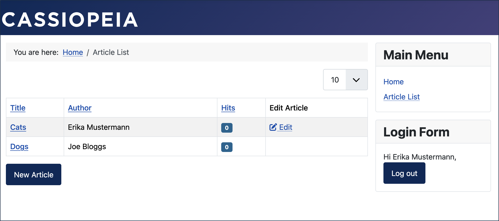
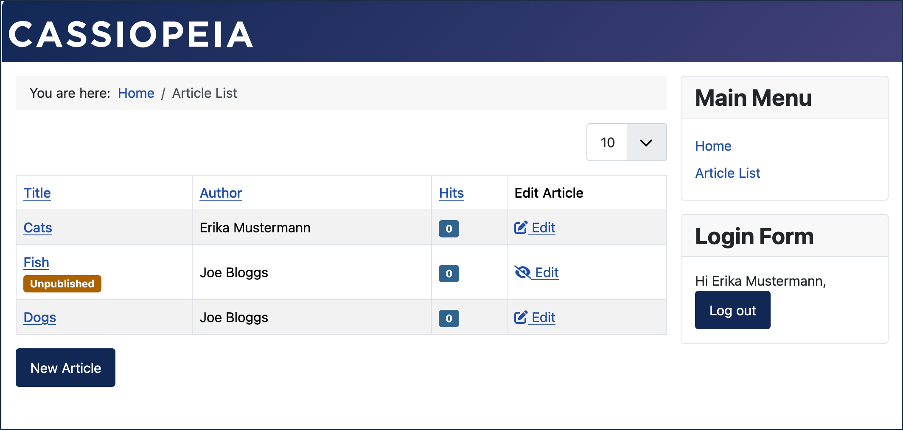
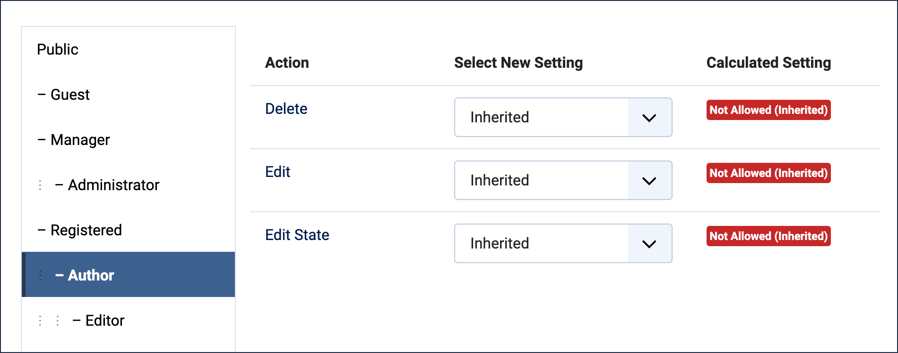
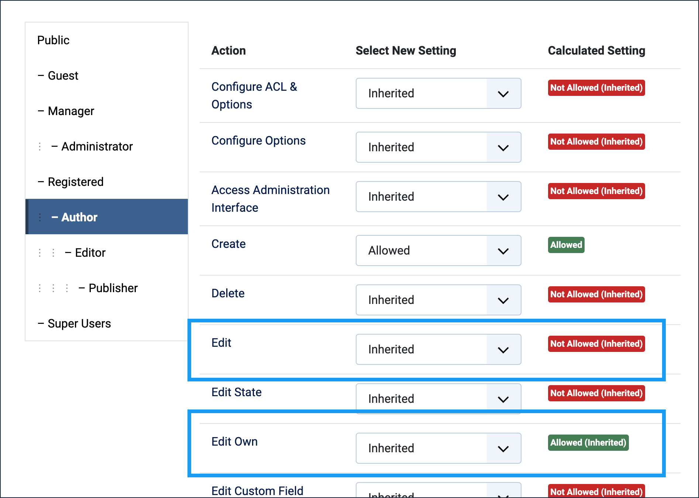

Joomla provides a rich framework allowing users in different roles to contribute content. This tutorial explores three user roles—Author, Editor, and Publisher—and the permissions that govern them. Authors have permission to create and edit their own content; Editors have additional permissions to edit all articles; and Publishers have additional permissions allowing them to publish content to the site.
Tick Author (Registered and Author should both be ticked)
Save & Close
Steps
Logging in to the backend and the frontend are two separate things. You logged in to the backend of the site (the administrative area) to perform the setup, but you are not logged in to the frontend (public-facing side) of the site.
This tutorial will have you view the site (which opens a new tab), then log in to the frontend using the accounts you set up for Joe and Erika. When you do, you remain logged in to the backend with your administrator account in the first tab. Switching between the frontend and backend is just a matter of switching tabs, and you will not need to log in each time.
Users with Author, Editor, and Publisher accounts can log in to the frontend of the site; Administrators and Super Users can log in to both the frontend and the backend of the site.
Create an Article from the Frontend
View the site using the View Site link in the header. Observe that the Article List menu item does not appear in the main menu (the access was set for registered users).
Log in as Joe with the username and password you created for that account.
The page refreshes and the Login Form is replaced by a friendly message with Joe's name and a Log out button, and the Article List link appears in the main menu.
Click on the Article List link. The article list is empty (there are not yet any articles).
Click the New Article button to create a new article.
Title: Dogs
Click Save & Close.
An alert notifies you that the article has been submitted.
New articles created by Authors are initially unpublished, and Authors do not have sufficient permissions to view unpublished content, so the article list is empty.
Publish Joe's Article
Switch back to the backend where you are logged in as an administrator.
Navigate to Content > Articles.
Click the Status icon next to the Dogs article.
The list refreshes and the status icon becomes a green checkmark.
Edit Joe's Article
Switch back to the frontend where you are logged in as Joe, and refresh the page.
The Dogs article now appears and you are free to view and edit it. Edit the article and enter a few words into the body.
Create another article titled Fish. Again, the article is submitted and unavailable until it is published.
Switch Users
Log out, then log in as Erika using the username and password you created for this account.
On the Article List page, note that you can see Joe's published article. You are able to view the article but not edit it.
Create your own article:
Click the New Article button to create a new article.
Title: Cats
Click Save & Close.
An alert notifies you that the article has been submitted.
New articles created by Authors are initially unpublished, and Authors do not have sufficient permissions to view unpublished content, so the article list is empty.
Publish Erika's Article
Switch back to the backend where you are logged in as an administrator.
Navigate to Content > Articles.
Click the Status icon next to the Cats article.
The list refreshes and the status icon becomes a green checkmark.
Do not publish the Fish article yet.
Edit Erika's Article
Switch back to the frontend where you are logged in as Erika, and refresh the page.
The Cats article now appears and you are free to view and edit it. Edit the article and enter a few words into the body.
Authors can create articles and view all published articles, but can only edit their own articles.

The Article List with Erika logged in. Erika can see both articles but only edit her own.
The Editor User Role
Return to the backend and upgrade Erika to an Editor role.
Navigate to Users > Manage
Click on Erika's profile to edit.
Under the Assigned User Groups tab, uncheck Author and check Editor.
Save (but don't close; you're coming right back).
Return to the frontend where you are logged in as Erika and refresh the Article List page. The Fish article now appears as an unpublished item along with Cats and Dogs.
As an Editor, you are able to edit any article. Edit the Fish article:
Add a few words to the body.
Click on the Options tab and observe that the article status is Unpublished.
Verify that you are unable to change the status—clicking on the dropdown does nothing.
Save & Close the article.

The Article List when the user has an Editor role and can view and edit all articles.
The Publisher User Role
Return to the backend and upgrade Erika to a Publisher role.
Under the Assigned User Groups tab, check Publisher.
Save & Close.
Return to the frontend where you are still logged in as Erika.
Publish the Fish article:
Edit the article.
Click on the Options tab and change the Status to Published.
Save & Close the article.
Log out, then log in as Joe again.
Verify that you see all three articles and can edit Dogs and Fish.
Permissions for Individual Articles
Return to the backend and view the Dogs article permissions.
Navigate to Content > Articles.
Click on the Dogs article to edit it.
Click on the Permissions tab.
All of the permissions here are inherited from settings that apply to all articles. This is the default, and the other two articles are the same.
The user groups appear on the left, and the selected group's permissions appear on the right.
Click on Publisher.
Publishers can change the state (status) of an article to publish it, and they can edit the article.
Click on Editor.
Editors are allowed to edit the article, but not its state.
When Erika was in the Editor role, she could edit any article, but not publish them.
Click on Author.
Authors are not allowed to edit the article.
However, Joe and Erika (before becoming an Editor or Publisher) were able to edit their own articles. That permission is set at a higher level, in the settings for all articles.
As an administrator, you can override these inherited permissions when needed.
Close the article without saving.
Permissions for All Articles
From the Content > Articles list, click on the Options button in the upper right.
Select Articles on the left to highlight it.
Click on the Permissions tab.
The user groups appear on the left, and the permissions of the highlighted group appear on the right.
Click on the Author group.
Observe that Authors are not allowed to edit articles generally (all articles).
But they are allowed to Create and "Edit Own," meaning they can create new articles and edit any articles they created.
This is the permission that allows Joe and Erika to edit their own articles.

Permissions for an individual article indicate Authors are unable to edit.

In the permissions for all articles, the Author group is where the Author's Edit Own permission is found.
Concepts
Joomla provides a basic framework for authors, editors, and publishers to collaborate on creating and publishing content.
The "Edit Own" permission is derived from settings that control all articles; viewing the permissions for a single article, where it appears that authors have no editing permissions, can be misleading.